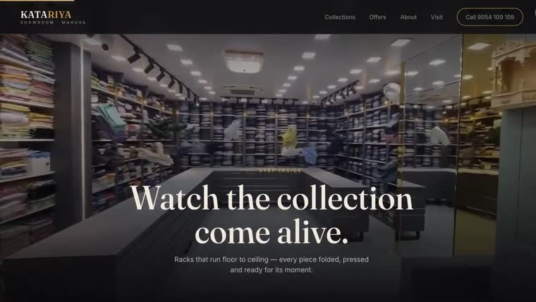
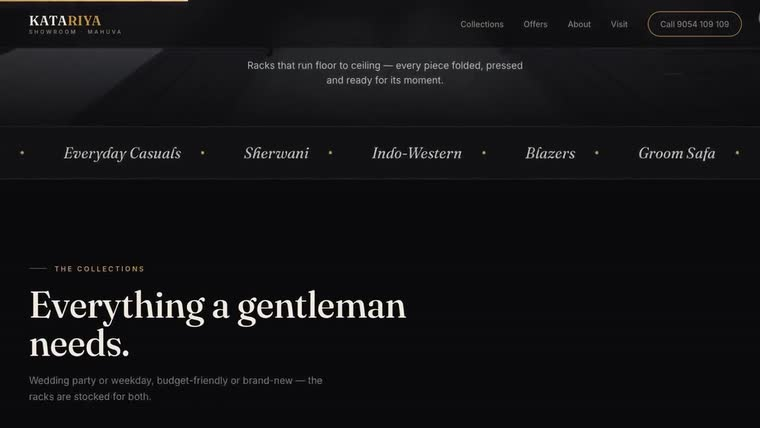
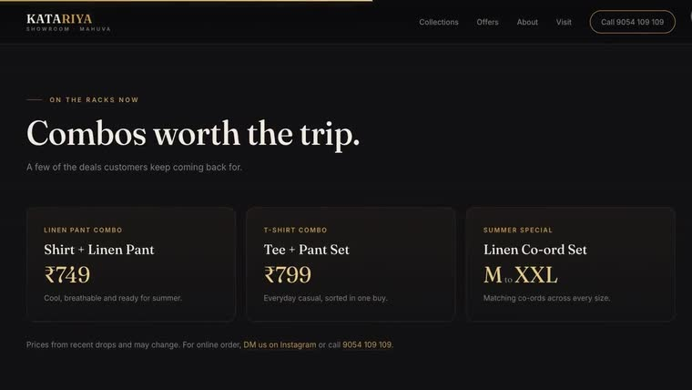

- Scope
- Single-page showroom site
- Status
- Concept
- Palette
KATARIYA — MAHUVA
Katariya is a family menswear showroom in Mahuva — sherwanis and groom safas at one end of the rack, everyday denim at the other. Nothing about the business is online. The site's job is not a checkout. It is getting someone through the door.
Concept project. A self-initiated design, made to show how this studio approaches a local showroom. Katariya did not commission it and the site described here was never built for them.
- Subject
- Katariya, Mahuva
- Scope
- Single-page showroom site
- Role
- Self-initiated — design and build
- Status
- Concept — not commissioned
The premise
A local clothing showroom is losing the argument to online retail before a customer has considered visiting — not on price, but on knowing what is in stock and whether the trip is worth making.
Katariya's real advantage is the room itself: racks floor to ceiling, six categories under one roof, and someone who will tell you what actually fits. None of that survives a phone listing and a set of directions.
The build
The site opens with “Scroll to step inside” and means it literally. Instead of a homepage that describes the shop, the scroll is a walk through it — down the racks, past the collections, out at the counter.
It is the studio's own thesis applied to a room rather than a product: one continuous move, no cuts, and the visitor is inside the space before they have decided to be interested.
The detail
- Six collections, honestly labelled. Sherwani & groom wear, blazers & suits, premium shirts, tees & polos, jeans & denim, kurta & co-ords — each tagged by the occasion a customer is actually shopping for, from wedding to everyday.
- The combos are the hook. The layout puts specific offers at specific prices on the page, because a vague discount does not turn browsing into a trip.
- Two buttons that matter. Get directions and call. No enquiry form, no cart — the entire page is measured against whether someone walks in.
What it shows
A finished single-page concept, built to argue that a showroom's best asset is the room itself. If it were ever built for real, the only number worth putting on this page is footfall — and it would go here measured, not projected.